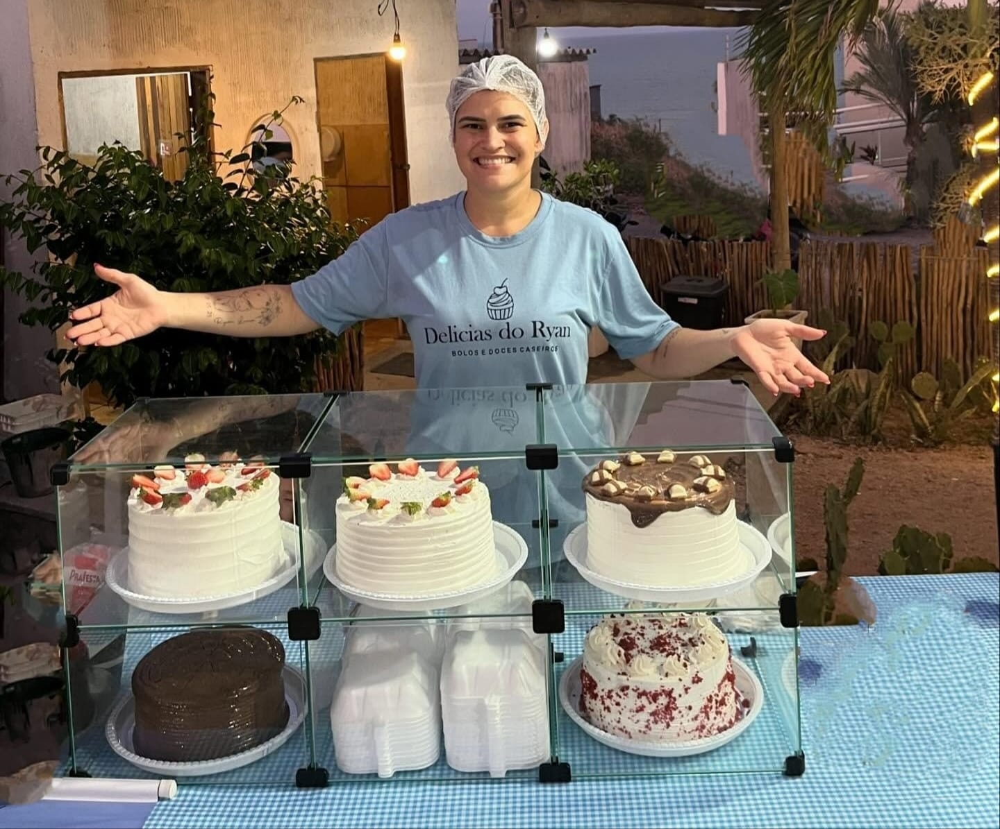

REFERÊNCIA EM FATIAS NO RN 🍰
Nasceu de amor e virou sabor 💕
Somos especializados na produção de bolos e doces caseiros personalizados, feitos com ingredientes de qualidade, carinho e atenção aos detalhes. Atendemos aniversários, festas, eventos e comemorações especiais, oferecendo sabores variados e apresentações que tornam cada momento inesquecível. Trabalhamos sob encomenda, com atendimento via WhatsApp, garantindo praticidade, qualidade e satisfação em cada pedido.
Nossos Sabores
Oferecemos bolos e doces caseiros personalizados para tornar seus momentos ainda mais especiais. Além das encomendas completas, também disponibilizamos fatias deliciosas prontas para consumo, ideais para adoçar o seu dia a qualquer momento. Trabalhamos com ingredientes selecionados e muito carinho em cada detalhe.
- 🎂 Bolos caseiros – Sabor tradicional com aquele gostinho de feito em casa.
- 🍫 Bolos vulcão – Recheio cremoso e cobertura irresistível.
- ✨ Bolos decorados – Personalizados para aniversários e eventos.
- 🍬 Brigadeiros gourmet – Sabores especiais com acabamento premium.
- 🍰 Fatias deliciosas – Perfeitas para adoçar seu dia.
Sobre Nós
A Delicias do Ryan nasceu do amor pela confeitaria e da vontade de compartilhar sabores incríveis com a comunidade. Fundada por Rayssa, uma apaixonada por doces, nossa empresa se dedica a criar bolos e doces caseiros personalizados que trazem alegria e sabor para cada ocasião. Com uma equipe talentosa e comprometida, trabalhamos com ingredientes de alta qualidade e muita dedicação para garantir que cada pedido seja especial e inesquecível. Nosso objetivo é transformar momentos comuns em celebrações memoráveis, oferecendo produtos deliciosos e atendimento excepcional.
Contato
Endereço: Av. Poços de Caldas, 2035 - Ponta Negra, Natal - RN, 59091-200